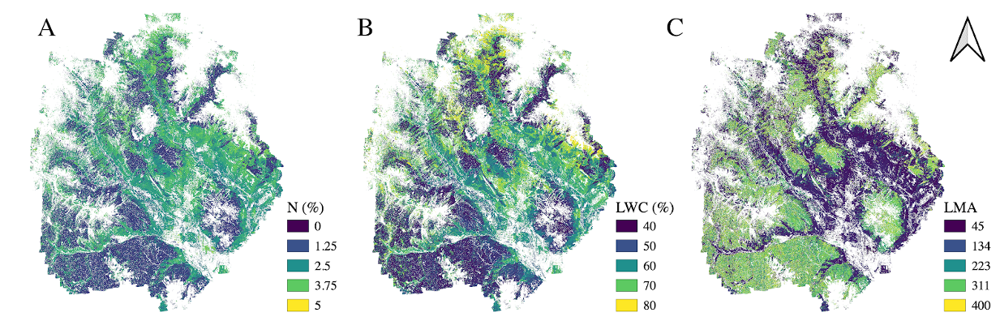

Foliar trait model application overview
Detailing code and datasets used in mapping foliar traits from 2018 NEON AOP survey over Crested Butte, CO.
This project contains a repository that handles the management and merging of NEON AOP remote sensing data with field/lab-based trait data to develop PLSR models, as used for trait mapping that was conducted in the East River, CO from data collected in June, 2018. The code leverages a plsr ensembling routine (external to this repository) to create trait models and assess the model performance. This code was created as part of an effort to generate foliar trait maps throughout the Upper East River watersheds, home to the Rocky Mountian Biological Laboratory and DOE's Watershed Function Scientific Focus Area site in Crested Butte, CO in association with NEON's Assignable Asset program. Here we document this repository, associated code repositories required for AOP data processing, and sources for both AOP and field based data used in this study.
A full description of this study can be found in the following publication, and use of this code should cite this manuscript:
K. Dana Chadwick, Philip Brodrick, Kathleen Grant, Tristan Goulden, Amanda Henderson, Nicola Falco, Haruko Wainwright, Kenneth H. Williams, Markus Bill, Ian Breckheimer, Eoin L. Brodie, Heidi Steltzer, C. F. Rick Williams, Benjamin Blonder, Jiancong Chen, Baptiste Dafflon, Joan Damerow, Matt Hancher, Aizah Khurram, Jack Lamb, Corey Lawrence, Maeve McCormick. John Musinsky, Samuel Pierce, Alexander Polussa, Maceo Hastings Porro, Andea Scott, Hans Wu Singh, Patrick O. Sorensen, Charuleka Varadharajan, Bizuayehu Whitney, Katharine Maher. Integrating airborne remote sensing and field campaigns for ecology and Earth system science. Methods in Ecology and Evolution, In Press.
The code in this repository was used merge, subset, and organize data for application of PLSR ensemble code, as well as plot and assess model quality. It also includes code to apply PLSR equations to reflectance datasets.